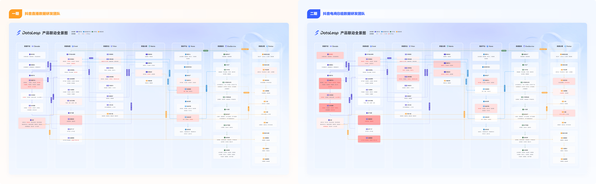

理解典型工作流
梳理不同数据团队使用产品的核心路径。
ROLE & JOURNEY RESEARCH
跨产品的体验问题，往往发生在单个子产品视野之外。通过对比两类业务的数据研发场景，这项研究尝试让团队看到真实工作流中的共性、差异和角色关系。

DataLeap 大数据开发治理套件包含多个子产品，团队对业务全流程与角色链路的理解不够完整，影响了需求与痛点的定位。研究分别深入电商与直播的数据 BP 团队，补足跨产品的用户视角。
梳理不同数据团队使用产品的核心路径。
对比不同业务方向的任务、协作和产品使用方式。
将画像与链路供业务、产品和设计团队后续使用。
分别了解两类业务数据研发团队的任务与工作方式，避免仅从子产品功能出发理解用户。
把核心工作流放在同一结构中比较，识别使用链路的相同点与差异，以及模块之间的衔接问题。
形成多版本角色画像与通用路径，将重点问题和产品优化机会向业务与项目组传递。
对比核心路径与角色任务
沉淀面向不同团队的研究产出
原复盘记录重点需求存在转化，但部分问题总量仍为待补充项；本页不将缺失数据写成已验证的业务结果。
画像不仅描述用户是谁，更应帮助团队判断用户在什么情况下、为什么需要某项能力。后续可继续丰富画像内容，并持续跟踪研究发现的实际采用情况。